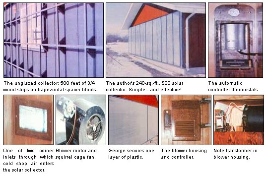
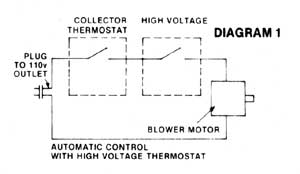
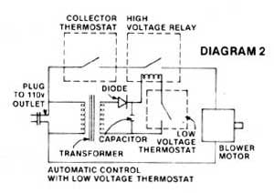

"For a super-simple and super-inexpensive solar heating system that really works," say Don R. and George Waterman of Springfield, Missouri, "you only have to follow four rules. One, glaze with low-cost plastic film instead of glass or plexiglass ... two, use a structure's existing south-facing wall for the back of your collector ... three, forget about trying to store the heat you collect ... and, four, scrounge!"
If you really want to put solar energy to work for you right now on a minimum-cash-investment basis, you can. I know, because last winter my father, George Waterman, and I supplied a 30 X 40 insulated workshop with almost all of the heat needed to keep the building's interior comfortable throughout near-zero days . . . and we did it with a solar heating setup that cost us a total, out-of-pocket, of only $30.
We accomplished this feat with a fourfold secret of low-cost construction: [1] We glazed our 8' X 30' solar collector with inexpensive plastic film instead of glass or plexiglass, [2] we used our workshop's existing south-facing wall for the back of the collector, [3] we did not build any heat storage into our design, and [4] we scrounged a great deal of the material that went into the solar heating system.
Thanks in large part to the four points listed above, our sun-powered heater was also quite simple in design and went together very rapidly. We put the whole system up with only about a week's worth of work (spread out, due to bad weather, over nearly two weeks). Compare our total time and cash investment to the $1,500, $2,000, or more that 240 square feet of commercially manufactured collectors would have cost (before installation, of course, and before tacking on another ridiculous figure for blowers, ducting, etc.) ... and I think you'll agree that our initial investment was quite reasonable.
Nor will upkeep (which should mainly involve the replacement of our collector's double layer of plastic film) be the continuing expense that you might think. We figure on replacing our film no more frequently than once every two years (it's already been through one winter and looks good for another). But even if we have to change both layers of the plastic every year, it's quite inexpensive (a roll of six-mil polyethylene measuring 8' X 100' cost us only $17). At that price, it'll take 34.5 years worth of annual replacements to add up to the cost ($400) of one original double set of glass collector covers ... and 69 years of annual replacements to equal the cost ($800) of duo plexiglass glazing. We think we've got the trade-off working in our favor.
We started our collector by outlining its 8' X 30' area with four 15'-long and two 7'9"?long 2 X 4's. (Since our plastic was just eight feet wide, we used 7'9" uprights on the ends of the unit which, when capped top and bottom by 1-1/2"?thick "2 X 4's", added up exactly to the plastic's eight-foot width.) These 2 X 4's could have been just toenailed (on edge) to the south wall of the shop, but we took the time to mount them in a somewhat more sophisticated (and we think better) way. What we did was first nail 3/4" X 2-1/2" strips of lumber flat against the edges of the 2 X 4's (see detail I sketch on the drawing which accompanies this article). Since the so-called 2 X 4's sold today actually measure only 1-1/2" by 3-1/2", this means that the strips formed a lip measuring 3/4" deep and a full one inch wide completely around the 8' X 30' circumference of the collector frame. And that then made it awfully-easy to attach the frame(right through the lip) to the shop's wall with wood screws.
We made the seal between the 2 X 4 frame and the tongue-and-groove siding on the workshop wall as airtight as possible by stuffing small amounts of fiberglass insulation and old cardboard into every crack we could find. A good bead of caulking compound run completely around the outside of the collector-to-wall joint finished off that part of the job.
As soon as we had our collector framed in, we cut three holes into the part of the shop's wall that was enclosed by the framing: one in the top center and one each in the lower corners. These openings, of course, were made so that cool air from the workshop could enter the collector (through the two lower holes) where it would be heated before exhausting back into the shop (through the top, center vent) to warm the building.
The size of the upper hole was determined by the dimensions of the case around the intake on the blower we later mounted inside the shop and over the opening. (See BLOWER section of this article for more details about that part of our installation.) The two cool air inlets, however, were pretty much calculated on a by-guess-and-by-gosh basis.
Which would you rather do? Move a little bit of air through your collector and heat it a lot ... or allow a great deal of air to flow through and warm up only moderately? The size of your inlet vents can decide that question one way or the other. In general, though, you're better off making those openings too large rather than too small ... since severely restricted intakes will "starve" the blower in the top hole, make it labor excessively, and thereby cause it to wear out faster. You'll also find that a greater volume of air freely circulated through the collector and then back into the area that is being warmed pays off (especially in larger buildings) in more uniform temperatures throughout the space being heated.
The 42 truncated triangles (triangles with one tip cut off) which we used as spacers inside our collector were cut from leftover two-footlong lengths of 2 X 12 that we picked up free at a local lumberyard.
If we had not added the 3/4"-thick lip to our collector's frame, these truncated triangles would have been cut 2-3/4" high. Since we did add the lip to the frame, though, we made the triangles 3-1/2" tall. (The whole idea, of course, is to cut these spacers so that when they're topped by the 3/4"-thick strips which make up the framing for the collector's front ... the outside [front] surfaces of the strips will come out just flush with the outside [front] surfaces of the 2 X 4's that form the collector's perimeter.)
I should point out, too (no matter which height spacer you use when building one of these collectors), that you don't really have to make the blocks in the shape of truncated triangles. The "ears" on such triangles are awfully handy when it comes to nailing or screwing them to a wall ... but squared-off, rectangular blocks about 31' long and either 2-314" or 3-1/2" high will work just as well if you don't mind toenailing them in place.
The truncated triangle spacers were spiked into position in three evenly spaced horizontal rows so that they were two feet apart, center to center, both horizontally and vertically. Once they were in place we slapped a good, thick coat of black wood stain on the triangles, all the wall area bounded by the collector's main frame, and the inside and outside surfaces of the frame itself. (As you know, dark colors-especially black-tend to absorb the sun's heat, whereas lighter colors reflect the sun's rays away ... and we wanted our collector to absorb.)
This is a good place to mention that you should not coat the inside of one of these collectors with a paint that contains lead or any other toxic compound. The relatively high temperatures sometimes generated inside the unit can release the noxious elements as gases which will then mix with the air drawn through the collector and spew into the living or working area that the solar setup heats. Even the wood stain we used emitted a rather disagreeable (though harmless) odor during the first few weeks our sun-powered heater was in operation. And that was bad enough. So take a tip from someone who knows: Paint the inside of your collector only with a high-temperature, flat black paint or stain that contains absolutely no toxic compounds and which-if at all possible-will emit no odors when heated to as much as 200°F or more by the sun.
Once you've framed in and painted the inside of your collector-and before you add the facing strips and plastic film to its front-you'll probably find it convenient to install the blower on your heater's exhaust (top) vent. (Although this blower is installed inside the shop or room that is to be heated-not inside the collector itself-you may very well find it convenient to put the fan in position with one man or woman working inside and a second on the outside of the building. After the plastic film is in place, of course, that will no longer be possible.)
We salvaged our blower from an old, unused gas furnace that was gathering dust in my father's basement. The "squirrel cage" fan was ideal (as well it should be, since that's exactly the kind of job it was designed to do) for distributing warm air throughout the 30' X 40' area we wanted to heat.
If you don't just happen to have an old blower on hand the way we did, ask around at your local furnace sales and supply houses. For every new central heating unit that goes into an already-built house, there's usually an old one that comes out. One dealer, in fact, told my father that he sometimes accumulates so many replaced furnaces that he has to cart them-lock, stock, and blowers-off to the dump. Which is why he's always happy to remove some of the fans and sell them for a price. His price? Usually about $3.00 for a blower with a working motor ... although we talked him out of four of the fans with motors and two without for a grand total of eight bucks. Bargain a little.
And if bargaining doesn't turn up a real" blower or two, you can always use an old window fan instead. Sure, such a fan will probably take up more space than one of the compact squirrel cage blowers, and you'll most likely have to cut a bigger hole in the wall where it mounts in order to get a proper transfer of air. But that's neither here nor there. The important point to remember is that you have a great deal of latitude when it comes to scrounging up a blower for this solar heating system. Almost anything that will pull hot air out of the collector and push it into the area where you want it is probably going to be just fine.
And here's yet another possibility: If you're thinking about adding one of these sun-powered heating setups to a cabin or other building that happens to be located out beyond the powerlines somewhere ... well, it can be done. Just scrounge up a 12-volt automobile heater blower and a few batteries from some junked cars, and you're in business. Especially if you have a waterwheel or a windplant out there "back of beyond" to keep the batteries charged!
We built a housing for our squirrel cage blower out of scrounged pieces of plywood and sheet metal ... and we didn't put a whole lot of scientific study into the design. We just made sure that the hole in the wall through which the fan would draw warm air from the collector was at least as big as the blower's outlet. Then we mounted the fan over that hole and boxed in around it. A rectangular opening that just fit around the blower's exhaust was left in the side of the casing that faced into the shop.
At first, since we all know that hot air tends to rise, we put a set of louvers in this outlet hole on the housing and positioned the flow guides so they'd direct the stream of hot air down toward the floor. That didn't work so well, though, because the concrete immediately under the blower tended to soak up most of the heat and what was left of the air's circulation never seemed able to make it past various benches, equipment, and other objects in the shop to the building's other side. So we took the louvers out, and immediately noticed a much more even temperature throughout the whole 30' X 40' workshop.
As you wind up your blower installation, remember that the job won't be complete until you've put a furnace filter screen over each of the cool air inlets in the collector's bottom corners. You don't want dirt, sawdust, and other fine debris to float into the collector, cling to its plastic cover, and thereby reduce the amount of sunlight (heat energy) that the unit absorbs. For the same reason, it's a good idea to frame in all three of the holes cut through the wall ... to keep any dust, insulation particles, etc., that might be inside the partition from floating into the collector.
There are approximately 500 linear feet of 3/4" by either 1 " or 1-1/2" facing strips on the front of our collector and we scrounged 'em all from old boxing lumber. It's possible to get four or five lengths of these strips from even split boards that are virtually useless for any other purpose. Remember, too, that a great many of these facing pieces can be as short as two feet long and still work.
Nail your longest strips to the tops of the triangles so that you form three horizontal rows that extend the full length of the collector. Then cut short pieces that fit between the horizontal rows to make vertical rows of the stripping. When you've finished, you'll have a very neat gridwork of two-foot squares completely covering the face of the whole 8' X 30' unit. This gridwork (which you'll probably want to paint) will provide excellent support for the plastic film you're about to apply and will keep the flexible covering from being drawn against the back of the collector when the solar heating system's blower is pulling air from the unit.
Check around and take a look at the various plastic sheetings available in your area before you buy. In general, the clearer the covering on your collector, the better the unit will work ... and you'll find a considerable range of transparency, even in the least expensive plastic films. Either four- or six-mil-thick sheeting should be all right ... but the sixmil (even though it transmits slightly less light) is somewhat more, durable and, therefore, to be preferred. We covered our collector with sixmil polyethylene that we bought in an 8' X 100' roll (for$17) from Sears.
Before you begin to apply the plastic film (especially if you do the job in cold weather), make sure that it has warmed to at least room temperature. If you don't, you'll find it impossible to stretch the covering tightly enough to compensate for the plastic's expansion once the collector begins to heat up. And that's not good. Besides looking bad, a loose, floppy covering will also wear out a great deal faster than a taut one.
We tacked our plastic on with a few staples to hold it in place until we could really anchor it every two feet with predrilled vertical 3/4" thick by 1 " wide by 8' long strips of wood. These strips were attached with screws ... which we think are almost a must for later easy replacement of the plastic covering.
A second layer of the film was then put on right over the strips holding the first (which, of course, automatically created a 3/4"-thick insulating air space). This second plastic covering was also stretched as tightly as possible and anchored with strips and screws. This time, however, the vertical strips were spaced four feet apart.
We wondered just how much better our collector would work with two layers of plastic on its front instead of only one. So we operated the solar heating system with its collector enclosed by a single sheet of film for about a week before we applied the second. Surprisingly enough, the "double glazing" of plastic raised the temperature inside the collector by only about ten degrees ... which wasn't nearly as much as we had anticipated. There was, however, relatively little wind during the test of the single layer (although it was quite cold: 5 to 10 degrees above zero), and this undoubtedly made some difference. The single sheet would almost certainly lose far more heat on windy days than the double layer of film.
We were also surprised to learn that temperatures inside our collector did not directly reflect the differences in outside air temperature. In the middle of the winter, with the blower turned off, it didn't seem to matter much whether it was five or 40 degrees above zero outside. The temperature inside the double glazed collector usually hit 140 degrees by about 10:00 a.m., rose to 150 or 160 somewhere between 11:30 a.m. and 1:30 p.m., and then fell back to 140 by 4:00 p.m. With the blower running, these figures all dropped about 30 degrees right across the board. (Remember, too, that our collector is set up in Springfield, Missouri. Readings will be somewhat different for any unit you build if you live at a different latitude, your area experiences more or less cloud cover, etc.)
From our observations, then, we have concluded that the outside air temperature makes practically no difference in the performance of our vertically mounted collector. The angle of the sun, however, makes a great deal of difference in the unit's output ... and, interestingly enough, these variations in output work entirely to our advantage.
That is: During the coldest months of winter (outside air temperatures of five to 40 degrees Fahrenheit), when the sun is lowest in the sky, our collector-as we've already stated-hits a maximum internal temperature (blower off) of 150 to 160 degrees. In May, though (outside air temperature of 80 degrees), with the sun much higher in the sky, the collector warms up inside (blower off) to only about 120 degrees!
A vertically mounted collector, then, works just the way we'd all like a solarenergy trap to work. It catches a lot of the sun's rays in the winter (exactly when we want it to), and absorbs increasingly less of those rays as Ole Sol rises higher in the sky and the weather warms (which is precisely the time that we don't want a solar or any other kind of heating system to work well at all).
Despite our enthusiasm for the solar heating system we've added. to my father's workshop, we do want to be painfully honest and say that our 8' X 30' collector has proven slightly too small to completely heat the whole 30' X 40' building as much as we'd like. If the insulated structure had only been turned the other way (so that one of its 40' sides faced south), however, the solar heater would probably be just big enough to supply all the warmth we'd ever want on almost any winter day that we'd care to work in the shop.
This is not to say that the solar furnace doesn't do a bang-up job. It most certainly does. With no supplemental heat at all, the sunpowered system will bring the workshop up to a very comfortable temperature for at least five hours a day ... from 1:00 in the afternoon to 6:00 that evening. And if a small propane burner is turned on for 45 minutes just once about mid-morning to warm the shop to 55 or 60 degrees, the solar heating system will then maintain and gain on that temperature throughout the rest of the day ... topping out right at 70 degrees about 4:30 in the afternoon. (The building's insulation then keeps the shop's inside temperature from dropping below 35 or40 degrees during the following night. The lower figure doesn't concern us, though, since we only use the shop during the day.)
We think that's pretty good performance for a total installation cost of $30. As a matter of fact, it'd still be darned good performance if we'd have bought everything new and spent, perhaps, $100 on the solar heating system. The bottom line, then, is that for very little cash outlay we're tapping a meaningful amount of the sun's energy for use in our family workshop.
The question I'd like to ask you, then, is: Are you sure you don't have a workshop, playroom, or other enclosed area that you need heated only during the day ... for which this very simple, low-cost, nonstorage sunpowered system that can be largely constructed from scrounged materials wouldn't be ideal?
Once it's up, you know, all you have to do to keep this solar furnace working for years is [A] supply its blower with a small amount of electricity, and [B] replace that plastic every two years. Which is a pretty inexpensive way to heat in this day and age!
Some sort of device that will automatically turn the blower used in the accompanying solar heating system on and off is a handy thing to have. It can ensure that your shop or room or whatever will receive its full quota of sunny days' heat (but no nighttime or cloudy days' cold) from its collector.
Perhaps the simplest way to control your blower is with one of the readily available, low-cost, automatic timers on the market. Just estimate the most effective period for the fan to be on (say, from 10: 00 a. m. to 5: 00 p. m.) and set the timer to operate it for that length of time. The only problem with this setup, of course, is that it's "blind" to any external changes which might take place and that can influence the operation of the blower. If the sky is heavily clouded over, for instance, when the timer dumbly switches the blower on ... the fan will just as dumbly sit there for seven hours, blowing cold air into the room.
Clearly, to be really effective, your controller needs some sort of temperature sensor. No, this sensor doesn't have to be expensive. As a matter of fact, almost every gas furnace made has just such a device somewhere in its innards and a little scrounging can probably get you one for nothing. (We removed ours from the same old furnace that supplied our blower.)
It's easy to scavenge one of these temperature sensors from an old gas furnace. Open the panel that covers the pilot light and burning chamber. Inside you should see a small box with wires leading out of it. Cut or disconnect these wires and remove the box's cover. You should find a little gauge or dial inside with two movable pointers that can be set to turn the burner on and then off at whatever temperatures you choose.
Remove the screws that hold the box in place and pull it straight out. Surprise! You're now holding a box in your hand ... and that box has a long snout of a tube perforated with holes sticking out its back. If you can peer into this tube, you'll see a spiral strip of metal that expands and contracts as it's heated and cooled. It's this expansion and contraction that operates a simple switching mechanism inside the controller ... thereby making it possible for the controller to turn a gas furnace's blower-or, in this case, the blower for a solar furnace-on and off.
It's no trick to adapt one of these controller boxes to your sun-powered heating system. Just drill a hole through the wall that forms the back of your solar collector, stick the probe through the opening so that enough of the snout extends right into the collector to get a good temperature reading, and then electrically connect the "little black box" in series with the blower's motor in the same way that you'd hook up any other simple switch.
Now, at least, your solar furnace's blower can be set to turn on only when there's enough excess heat in its collector to make the operation of that blower worthwhile. But what if you don't want that warmth ... what if your room or shop is already up to-or higher than-the temperature you prefer?
No problem. When you hook your collector's temperature sensing device in series with the blower motor, just add an indoor high voltage thermostat (the kind used when electric heating cables are installed in a ceiling) as shown in Diagram 1. By adjusting the settings on both the collector sensor and the indoor thermostat (which you'll mount somewhere in the room being heated), you can now go away for days at a time ... always confident that the solar heater's blower will kick on-and will only kick on-when the collector is hot enough to do some good and the room is cool enough to need the collector's heat.
Pretty neat, huh? Except, of course, for the fact that a high voltage thermostat can set you back about $12 to $15. However, as you might have expected, there is a way for the dedicated scrounger to get the same job done for considerably less.
Go back to that junked gas furnace you've been scavenging parts from and pull out its thermostat. Yes, this is a low voltage thermostat, which means that it can't be wired directly into your blower's circuit the way a high voltage thermostat can (the load would burn it out). But that's no problem either. With just a little tinkering, we can make this one work too.
You'll need the step-down transformer that you can take from that old trusty-rusty gas furnace that has served you so well for so long. You'll also need one of the 12-volt relays that
Radio Shack and other electronics stores sell for anywhere from $3 to $5. The relay should have a 12-volt coil and contacts rated for 120 volts at 5 amps minimum. And try to get one with a coil designed for alternating current. A relay with the more sensitive direct current coil (which is what we used, since that's what we already had) won't work unless you add a diode and capacitor as shown in Diagram 2.
And since that's about as complicated as we can possibly design our circuit, let's hop on down to Diagram 2 and learn how to make this final, scrounged-up system work.
What we have is a circuit in which a low voltage thermostat connects and disconnects a low voltage transformer to and from the coil in a high voltage relay. And as that relay opens and shuts, it-in turn-connects and disconnects your solar heater's blower to and from the 110-volt electricity that makes it run. If the relay came wired with an AC coil, all well and good. You're home free. If it has a DC coil, however, you'll have to add the diode and capacitor shown in Diagram 2.
Which brings us to one final bit of electronic know-how that you should have. A capacitor large enough for this job (100 microfarads or so) will probably be electrolytic and, thus polarized. (That is, it will have me terminal that is positive + and one that is negative -). If you hook such a capacitor up "backwards" you'll burn it out and you must therefore take care to connect it properly.
But that's not difficult either, since there's such an easy way to determine the polarity of any low voltage source. With your transformer plugged in and the diode connected, simply stick the bared ends of the copper wire about 1/4" to 1/2" apart in a chunk of raw potato. Leave them there for a half hour - Dur ing that period an electrochemical reaction will take place, turning the potato dark blue around the wire connected to the positive pole. Connect the + side of the capacitor to that leg of the thermostat and the - side to the other one. -D.W.
|
 PHOTOS BY DON R. WATERMAN |
 |
 |